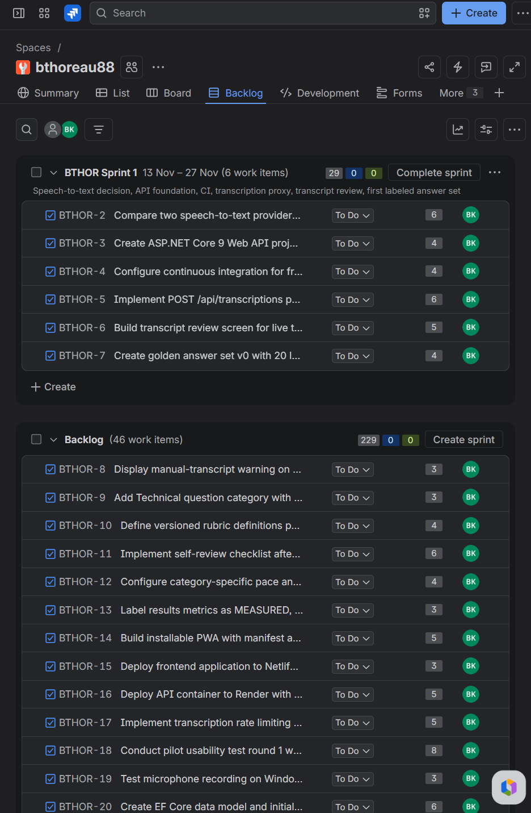

Entry 003 · Bug fix
The microphone that stayed on: a race condition in Interview Orbit's recorder
In my first entry I promised this story, so here it is. It's the bug I'm most glad we caught, because it's the kind a user would never report. They'd just stop trusting the app.
The problem
Interview Orbit records your answer with the browser's microphone. The first time you press Start recording, the browser shows its own permission prompt: Allow or Block. That prompt doesn't block the page. You can keep clicking around while it sits there.
So we tried the awkward path on purpose: press Start, then, while the prompt is still open, navigate away to another screen, and only then click Allow. The result: a recording started in the background on a screen that was no longer visible. Our test captured it directly: one recorder started and one live microphone track, even though the user had already left the recorder.
For an app whose whole pitch is privacy (audio is never stored or uploaded), a microphone that turns on when you're not looking is about the worst bug possible.
Why it happened
Asking for the microphone is asynchronous. The code calls getUserMedia and waits. The recorder logic assumed that when the answer came back, the user was still on the same screen and still wanted to record. Nothing checked whether that request still mattered by the time it finished. That's a classic race condition: the result arrives after the situation that asked for it is gone.
The solution: give every attempt a ticket number
The fix is a small "generation" counter. Every time recording starts, the counter goes up and that attempt remembers its number. Cancelling, resetting, or leaving the screen also bumps the counter. When the permission answer finally comes back, the code compares its number to the current one. If they don't match, or the screen is gone, the attempt has been abandoned: the microphone stream is shut off immediately and no recorder is ever created.
The important part was proving it. Three new end-to-end tests reproduce the exact sequence (start, leave, then grant permission) at desktop and phone sizes. Run against the old code, the race tests fail with a live microphone. Run against the fix, they pass, and the full suite stayed green (62 unit tests, all browser tests). One honest gap remains: those tests use a simulated microphone, so testing on real hardware on Windows and Android is now its own task in my backlog.

The rest of the week: planning the work
This week was also about turning my design document into a plan. I broke the capstone into 52 tasks, each between three hours and a day, each with a "done when" line so nobody (including me) can call something finished without proof. Sprint 1 focuses on the foundation the design review asked for: choosing a speech-to-text service that keeps filler words, standing up the API, CI, the transcription endpoint, the transcript review screen, and a first set of labeled practice answers to test against.
The lesson I'm carrying from the microphone bug into that plan is simple: write the test for the uncomfortable path first. The happy path almost never surprises you.
Sources
- MDN Web Docs. (n.d.). MediaDevices: getUserMedia() method.
- Interview Orbit source and evidence ledger: github.com/bthoreau88/interview-orbit.